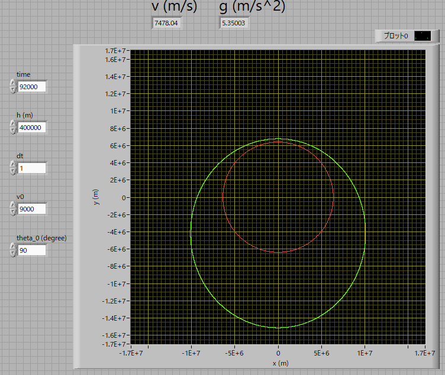
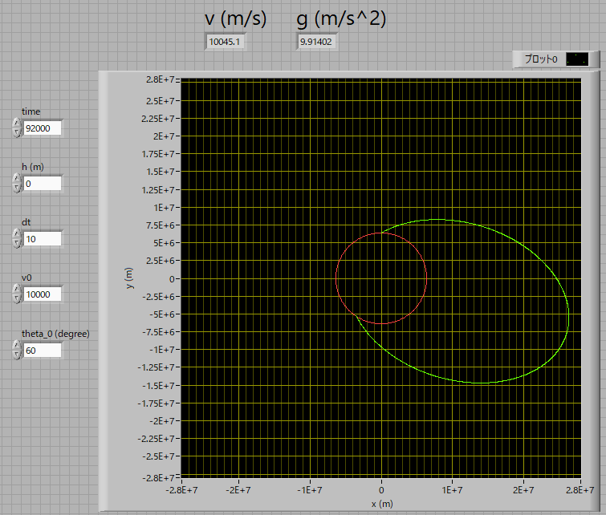

弾道計算 について-03
ケプラーの法則
つぎに，
高度：400km
速度：9km/s
⊿ｔ：1s
角度：90度
で計算してみた結果が下の図です．

この結果から言えることは，
弾道はほぼ，楕円軌道を描く
という，ある意味当たり前，ケプラーの法則，を再現したものに過ぎなかったのです．．．．
当初は，もっと過渡現象があり，楕円軌道に落ち着くものと思ったのに．．．
地表から打ち上げたら？？
となると，地表から打ち上げたらどうなるのでしょう？
高度：0km
速度：10km/s
⊿ｔ：10s
角度：60度

どこから打ち上げようとも，楕円軌道を描くのですから，脱出速度以下では，必ず楕円軌道と地球とが重なってしまいます．
つまり，地表に激突，です（角度90度，つまり水平に打ち出せば理論上は軌道を描きますが）．
となると，衛星を打ち上げて軌道に乗せるためには，途中で向き・速度を修正しないといけない，ということになります．
なんか腑に落ちませんが，もしご存じの方がおられましたら教えて下さい．